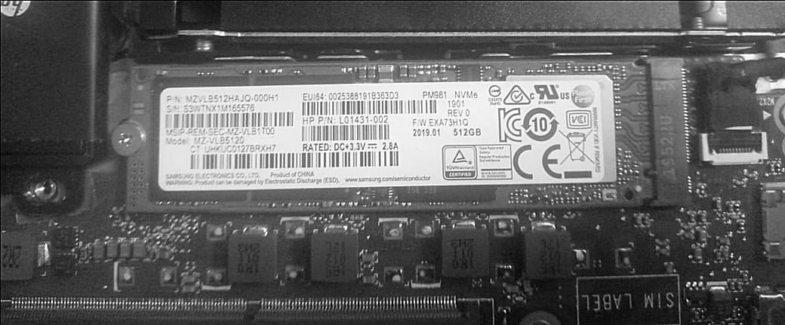

I just came back from the 2026 Nigeria Mining Week, which was held
at the Abuja Continental Hotel.
On October 15th, 2026, I decided to work on my laptop. Upon turning
it on, I found out that it could not boot, even though it was working fine
while I was in Abuja.
So, I decided to perform hardware diagnostics. For anyone reading this who does not know what that means, it is basically the process of testing physical computer components (such as RAM, Storage [SSD, HDD], CPU, GPU, Keyboard, etc.) in order to detect failures, errors, or performance drops. During the process, each of the hardware components passed the test except for the SSD; the system simply could not detect my SSD storage.
Initially, I thought about taking it to a hardware engineer for repairs, but then I remembered that a few years ago (while I was in 200 Level, I think) I helped a coursemate with the exact same issue. So, I decided to unscrew my laptop to check the hardware. After unscrewing it and looking at the mainboard, every component looked intact, and nothing appeared loose. But I thought that shouldn't stop me from removing the SSD from its slot anyway. I removed the SSD, cleaned and blew dust off both its surface and the slot, and plugged it back in. I turned on my laptop, and everything started working fine.
In cases like this, the fix is usually simpler than you think. If diagnostics show a component isn't detected, you can always try removing it from its slot on the mainboard, cleaning out any dust, and plugging it back in properly. The problem could just be particle contamination or a tiny physical dislodgement. Doing this will save you money, time, and stress.
After fixing it, I knew I took a shortcut 'cause I did not follow any safety procedure - I just wanted a working laptop, lol. But anyway, let me add this:
If you are not a techie, don't try to open your laptop and mess with your mainboard alone, because you could easily screw things up. If you are nervous about it, don't force it! Look for a tech-savvy friend who knows their stuff to guide you through it, just like I helped my coursemate back in 200L. Having someone who knows what they are doing will save you from completely destroying your laptop.
And for the techies: Make sure you follow the proper safety procedures when working on hardware or guiding someone else. Don't skip safety steps like unplugging the internal battery first to avoid frying the board, grounding yourself against static, and using compressed air instead of blowing into it.
And one last thing for everyone: once your laptop boots back up, back up your important files immediately! If an SSD suddenly stops detecting like that, it could actually be dying, so don't risk your data.
Don't take shortcuts like Sam did!